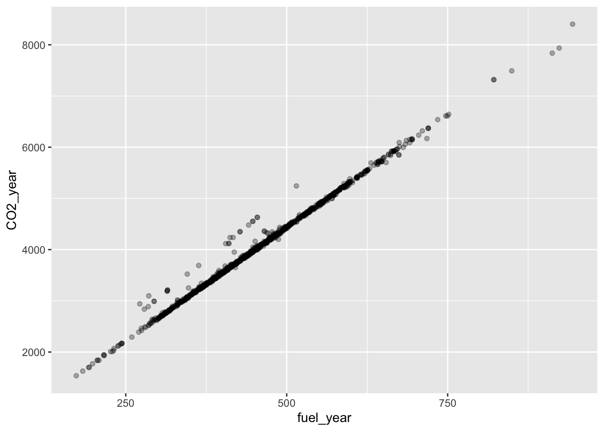
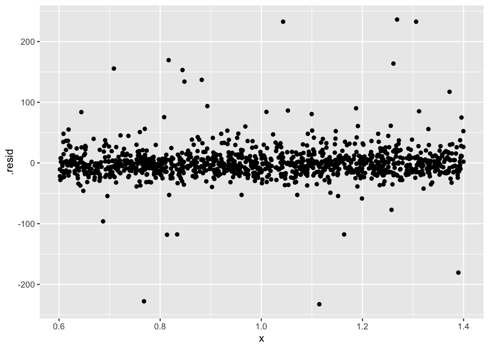
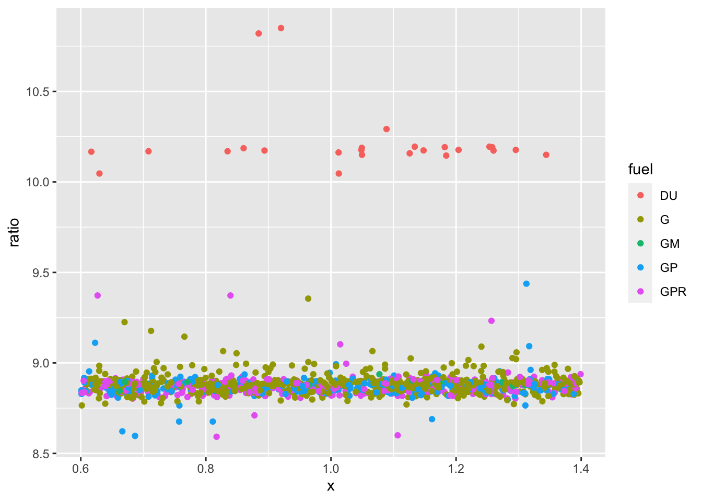
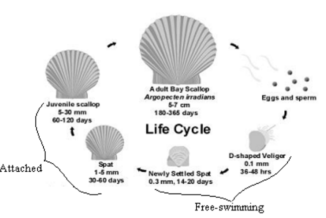

ggplot(MPG, aes(x = fuel_year, y = CO2_year)) +
geom_jitter(alpha=.3)
You have been learning some basics of data wrangling and visualization, along with what ModernDive calls “basic regression” and “multiple regression.” These are tools which you will continue to use in the second half of the semester.
The major theme of the second half of the semester is to identify patterns in data and evaluate/assess what you’ve identified to see if it’s useful for your purposes.
As an example of a pattern, let’s look at some Department of Transportation data on models of cars stored in the MPG data frame. We will start by looking at the link between fuel economy and CO_2_ production.
This is a very strong pattern. fuel_year and CO2_year are practically the same thing.
Machine learning approach: Start with nothing and take away variables that are meaningless
rpart::rpart(CO2_year ~ fuel_year + .,
data = MPG %>%
select(-CO2combined, -mpg_comb, -EPA_fuel_cost))n= 1154
node), split, n, deviance, yval
* denotes terminal node
1) root 1154 983805200 4055.459
2) fuel_year< 477.3361 727 203825200 3497.221
4) fuel_year< 382.5226 278 40816780 2953.129
8) CO2hwy< 229.5 43 5251163 2259.070 *
9) CO2hwy>=229.5 235 11061500 3080.128 *
5) fuel_year>=382.5226 449 29755260 3834.098
10) fuel_year< 427.1553 211 4069879 3610.758 *
11) fuel_year>=427.1553 238 5829750 4032.101 *
3) fuel_year>=477.3361 427 167698900 5005.902
6) fuel_year< 597.6272 328 33347410 4736.738
12) fuel_year< 536.1372 181 5201859 4490.884 *
13) fuel_year>=536.1372 147 3734356 5039.456 *
7) fuel_year>=597.6272 99 31857170 5897.677
14) model=488 Pista Spider,911 GT3,911 GT3 RS,911 GT3 Touring,AMG GLE 63,AMG GLE 63 S,AMG GLE 63 S (coupe),AMG GLS 63,AMG S 65,AMG S 65 (convertible),AMG S 65 (coupe),ARMADA 2WD,ARMADA 4WD,C10 SIERRA 2WD CAB CHASSIS,C10 SILVERADO 2WD CAB CHASSIS,CAMARO,CANYON CAB CHASSIS 2WD,Challenger SRT,Charger SRT,COLORADO CAB CHASSIS 2WD,COLORADO ZR2 4WD,CORVETTE,CTS-V,Cullinan,Dawn,Durango AWD,Durango SRT AWD,ESCALADE 4WD,F150 5.0L 4WD FFV GVWR>7599 LBS,F150 RAPTOR 4WD,G 550,Ghost,Ghost EWB,GLS 550 4MATIC,Grand Cherokee 4X4,Grand Cherokee SRT 4x4,GRANTURISMO CONVERTIBLE,GX 460,Huracan,Huracan 2WD,Huracan Spyder,Huracan Spyder 2WD,K10 SIERRA 4WD,K10 SIERRA 4WD CAB CHASSIS,K10 SILVERADO 4WD CAB CHASSIS,K10 SILVERADO 4WD TRAILBOSS,K1500 SUBURBAN 4WD,K1500 YUKON XL 4WD,LAND CRUISER WAGON 4WD,LEVANTE GTS,LEVANTE Trofeo,LX 570,M6 Gran Coupe,M760i xDrive,Maybach S 650,MKT HEARSE AWD,MKT LIMO AWD,Phantom,Phantom EWB,QX80 2WD,QX80 4WD,Range Rover LWB SVA,Range Rover Sport SVR,Range Rover SVA,Roush Stage 3 Mustang,SEQUOIA 2WD,SEQUOIA 4WD,Transit T150 Wagon,TRANSIT T150 WAGON FFV,TUNDRA 2WD,TUNDRA 4WD,TUNDRA 4WD FFV,Urus,Wraith,X6 M 89 6972789 5743.371 *
15) model=812 Superfast,Aventador Coupe,Aventador Roadster,Chiron,F150 Pickup 2WD,F150 Pickup 4WD,FORD GT,Grand Cherokee Trackhawk 4x4,GTC4Lusso,Mulsanne 10 3905090 7271.000 *The main tool we will use to identify patterns is regression modeling. Here’s the regression modeling description of the CO_2_ production problem:
How do we compare these two models to see if fuel is really the explanation? You will be learning a handful of techniques for summarizing models and, more important, when and why you would want to use each of the tools.
Call:
lm(formula = CO2_year ~ fuel_year, data = MPG)
Coefficients:
(Intercept) fuel_year
54.050 8.782
Call:
lm(formula = CO2_year ~ fuel_year * fuel, data = MPG)
Coefficients:
(Intercept) fuel_year fuelG fuelGM
118.8428 9.8895 -121.7502 -127.5287
fuelGP fuelGPR fuel_year:fuelG fuel_year:fuelGM
-93.9667 -94.9800 -0.9971 -0.9866
fuel_year:fuelGP fuel_year:fuelGPR
-1.0758 -1.0686 # A tibble: 2 × 7
term df.residual rss df sumsq stati…¹ p.value
<chr> <dbl> <dbl> <dbl> <dbl> <dbl> <dbl>
1 CO2_year ~ fuel_year 1152 7020002. NA NA NA NA
2 CO2_year ~ fuel_year * fuel 1144 917314. 8 6.10e6 951. 0
# … with abbreviated variable name ¹statisticUsing training data as input to model_eval().
# A tibble: 16 × 39
manufacturer divis…¹ model fuel_…² CO2_y…³ hybrid class doors vol_p…⁴ vol_l…⁵
<chr> <chr> <chr> <dbl> <dbl> <chr> <chr> <dbl> <dbl> <dbl>
1 aston martin Aston … Vant… 477. 4350 not Two … NA NA NA
2 Volkswagen … Lambor… Aven… 912. 7840 not Two … NA NA NA
3 Volkswagen … Lambor… Aven… 923. 7940 not Two … NA NA NA
4 Volkswagen … Lambor… Hura… 674. 5850 not Two … NA NA NA
5 Volkswagen … Lambor… Hura… 674. 5850 not Two … NA NA NA
6 Toyota LEXUS RC 3… 465. 4360 not Subc… 2 84 10
7 Toyota LEXUS RC 3… 465. 4360 not Subc… 2 84 10
8 General Mot… Chevro… CRUZE 272. 2940 not Comp… 4 94 10
9 Subaru Subaru WRX 487. 4200 not Comp… 4 97 12
10 General Mot… Chevro… CRUZ… 286. 3100 not Mids… NA 95 19
11 Nissan INFINI… Q70 469. 4330 not Mids… 4 104 15
12 Kia KIA MO… Opti… 347. 3250 not Larg… 4 105 16
13 FCA US LLC Chrysl… Paci… 451. 4160 not Spec… NA NA NA
14 Jaguar Land… Jaguar Jagu… 419. 3950 not Smal… NA NA NA
15 Toyota LEXUS RX 3… 471. 4320 not Smal… NA NA NA
16 Volkswagen … Lambor… Urus 718. 6170 not Stan… NA NA NA
# … with 29 more variables: displacement <dbl>, model_year <dbl>,
# transmission <chr>, mpg_city <dbl>, mpg_hwy <dbl>, mpg_comb <dbl>,
# CO2city <dbl>, CO2hwy <dbl>, CO2combined <dbl>, regen <lgl>,
# valves_exhaust <dbl>, valves_intake <dbl>, start_stop <chr>,
# cyl_deact <chr>, vol_passengers2D <dbl>, vol_passengers4D <dbl>,
# vol_passengersH <dbl>, vol_luggage2D <dbl>, vol_luggage4D <dbl>,
# vol_luggageH <dbl>, fuel <chr>, drive <chr>, n_gears <dbl>, n_cyl <dbl>, …
Motivating problem: Designing an enforcement regime for limits on scallop fisheries.

Fisheries are regulated by states and the Federal government in order to avoid collapse due to over-fishing. Often, the regulations attempt to protect juveniles—animals that have not yet reached reproductive age. If the juveniles are harvested, their potential progeny are annihilated. There are various ways to do this, for instance restricting fishing to months where adults are most prevalent, closing fisheries to provide an opportunity for the reproductive stock to recover, and so on.
In the 1990s, one of the ways the Federal government regulated scallop fisheries was by setting a minimum acceptable size for harvested scallops. For practical reasons, rather than monitoring individual scallops, the government monitored the average per scallop weight of each boat’s catch. For the sake of the example, imagine that the minimum acceptable weight is 1/30 pound.
A fishing boat might have 10,000 or more bags of scallops, which can be handled individually: weigh the bag, then count the number of scallops to get the average weight per scallop.
Discussion questions:
In this section of the course, you’ll learn some statistical concepts and methods that allow the above questions to be answered to produce a regulation that is protective and fair to the fishermen.
One idea is very simple: sampling variation. This is about how much the average per-scallop weight will vary from one bag to another.
Another idea is very subtle: What you can say about the whole cargo based on a sample of \(n\) bags.
Why variation is central to thinking about data.
How to measure variation: the variance.
Accounting with variance: what’s explained and what’s still not explained.